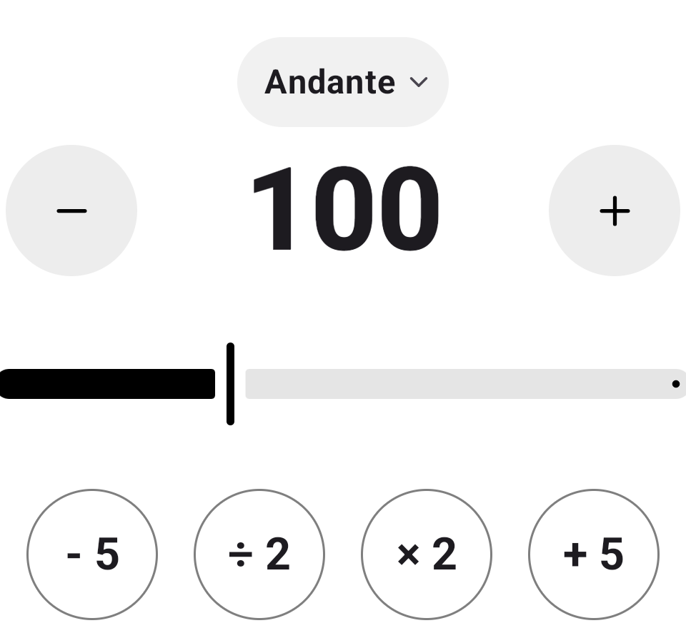

Entry — the click
A beat that holds.
Set the tempo, tap it in, or shape it bar by bar. Every beat can be accented, softened or muted, and the pulse is scheduled against a monotonic clock, so it does not wander as a session runs long.
- Tempo range40 to 220 BPM
- Time signatures2/4, 3/4, 4/4, 5/4, 6/8, 7/8
- SubdivisionsQuarter, eighths, triplets, sixteenths
- Per beatAccent, normal, mute
- Click soundsWood, Click, Classic
Largo40
Adagio66
Andante76
Moderato108
Allegro120
Presto168
Prestissimo201
40 BPM220 BPM
